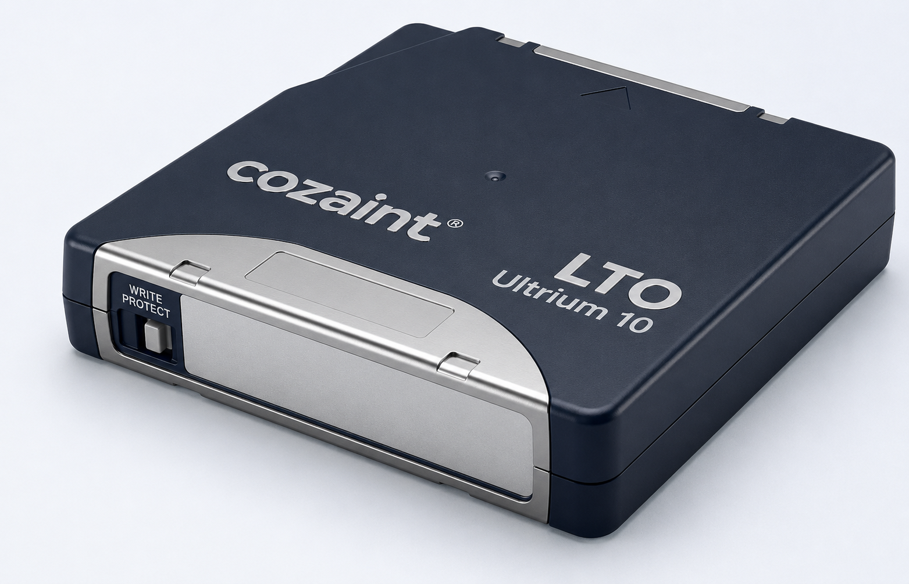
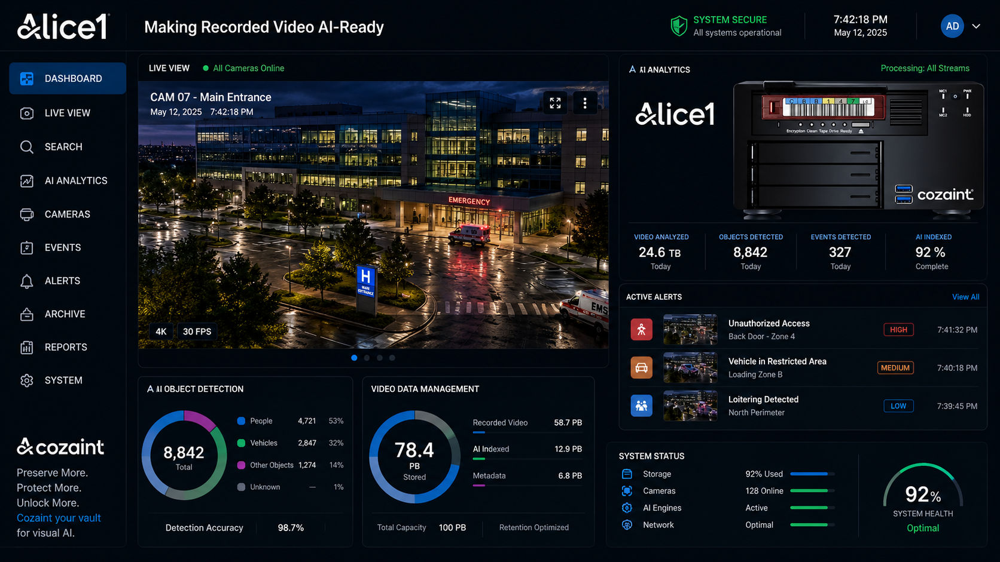
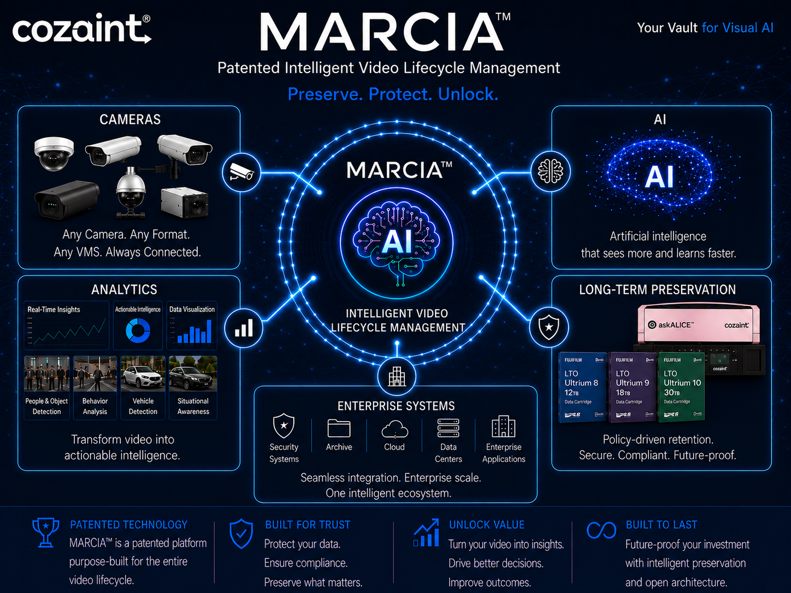

Intelligent video lifecycle management
Your cameras captured it.
Will it still be there when you need it?
MARCIA™ helps organizations preserve more of their visual history while reducing dependence on costly, power-hungry primary storage.
Compatibility validated for your environment
The retention gap
Recording never stops.
Storage decisions cannot wait.
Most surveillance systems record continuously, fill available storage, and overwrite older video. The problem appears when yesterday's footage becomes today's evidence.
-
01
Captured
High-resolution video enters active storage.
-
02
Retained
Your current retention window keeps moving.
-
03
Overwritten
Older evidence disappears to make room.
-
04
Needed later
An incident, audit or investigation changes its value.
MARCIA™ turns retention from a recurring infrastructure problem into a governed video lifecycle.
Preserve more history
Keep more visual context available for questions your organization has not thought to ask yet.
Reduce lifecycle cost
Use high-performance storage where speed matters and efficient retention tiers where history matters.
Give time back
Policy-guided movement reduces repetitive storage administration and keeps operators productive.
Reduce infrastructure load
Lower dependence on always-on primary disk, rack space, power and cooling.
Protect future value
Retain visual information for future investigation, review and qualified analytics.
How MARCIA™ works
One connected lifecycle.
Three clear stages.
Intelligent Video Lifecycle Management (IVLM) keeps recent video ready, moves retained video under policy, and returns requested history through the operator workflow.
Discuss the MARCIA™ architecture →Active video
Recent video stays ready
Your Video Management System continues its normal work.

Governed retention
Policy moves history
Retention rules govern what moves and when.
Connected workflow
Operators retrieve it
Requested history returns through a defined process.
Connected ecosystem
Technology Partners
MARCIA™ is designed to operate within a connected video-surveillance and storage ecosystem. Approved technology-partner integrations and relationships will be presented here.
Content placeholder for internal review. Partner names, logos, and relationship descriptions require approval before publication.

Operational continuity
Your team keeps working while video moves.
MARCIA™ coordinates lifecycle policies behind the scenes, preserves metadata continuity, and keeps request status visible — without turning every storage decision into an operator task.
- Policy-driven lifecycle movement
- Visible request and retrieval status
- Consistent operator experience
- Governance aligned to retention requirements
Built for the places that cannot look away
One lifecycle across every critical view.
Explore where surveillance history matters.
Smart cities
Preserve visual context across distributed public-safety environments.
Explore this environment →Airports
Retain incident history across terminals, gates, ramps and perimeters.
Explore this environment →Hospitals
Support investigation and review under defined access and retention policies.
Explore this environment →Warehouses
Keep operational visibility across high-volume logistics environments.
Explore this environment →Security operations
Keep operators focused while lifecycle policies work behind the scenes.
Explore this environment →Cozaint Partner Program
Bring the future of surveillance storage to your customers.
Cozaint works with security and surveillance systems integrators, Value-Added Resellers (VARs), Managed Service Providers (MSPs), storage and data-protection distributors, and consultants serving retention-heavy industries.

The architecture of
Enterprise
Video
Lifecycle
Go deeper
See the complete MARCIA™ architecture.
Explore the three-tier model, lifecycle policy, metadata continuity and operating principles behind long-term visual retention.
Preview the IVLM eBookRequest a MARCIA™ assessment
Start with a practical lifecycle conversation.
A MARCIA™ Assessment begins with your cameras, retention goals, storage mix, Video Management System and operating requirements—then turns them into a practical lifecycle conversation.
- 01Review your current environment
- 02Identify retention opportunities
- 03Plan a tailored demonstration